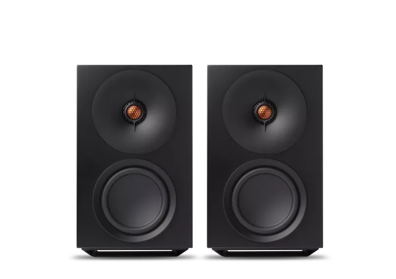
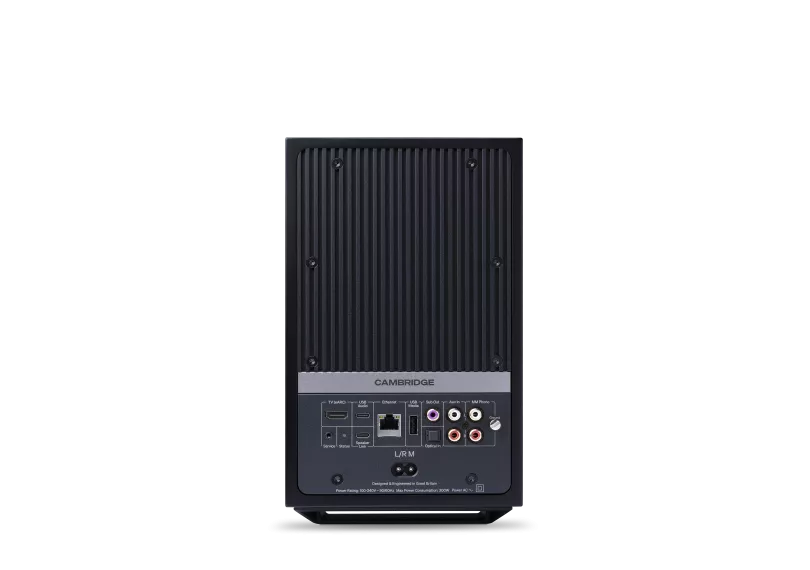
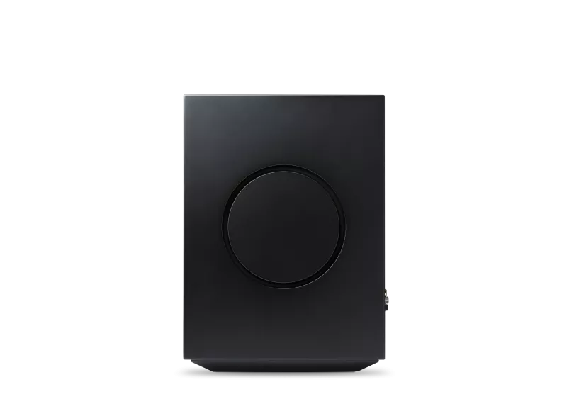
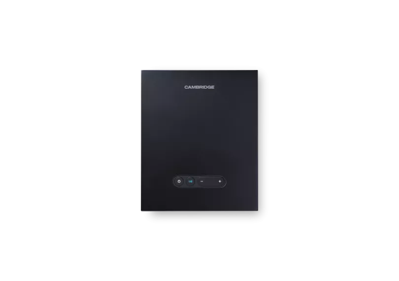
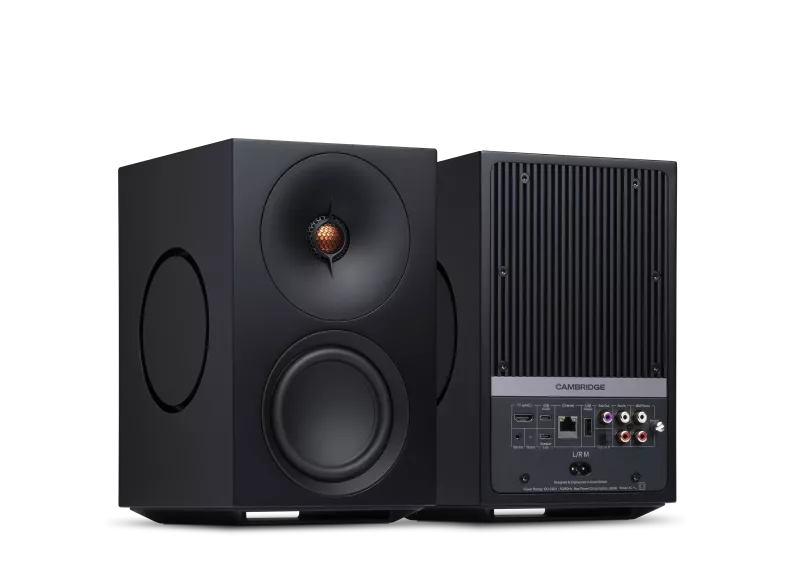
L/R M
L/R Mは、部屋いっぱいに広がるサウンドとシンプルで現代的なデザインを融合した、多目的アクティブストリーミングスピーカーです。StreamMagic内蔵に加え、Bluetooth、レコード、TVへの柔軟な接続を備え、複雑さなしに卓越したオーディオを求めるすべての方に最適です。パワフルでダイナミック、そして驚くほどシンプル — 音楽の瞬間を作り出します。
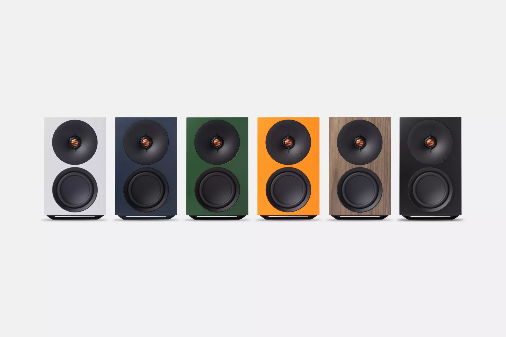

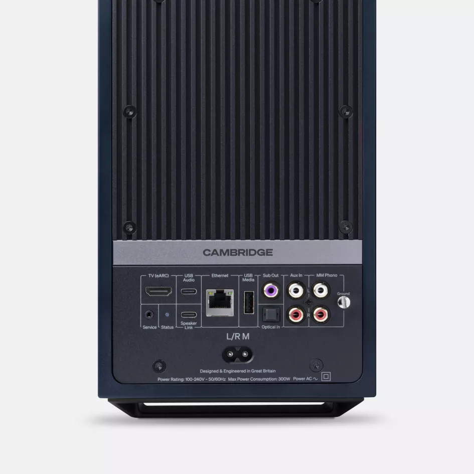
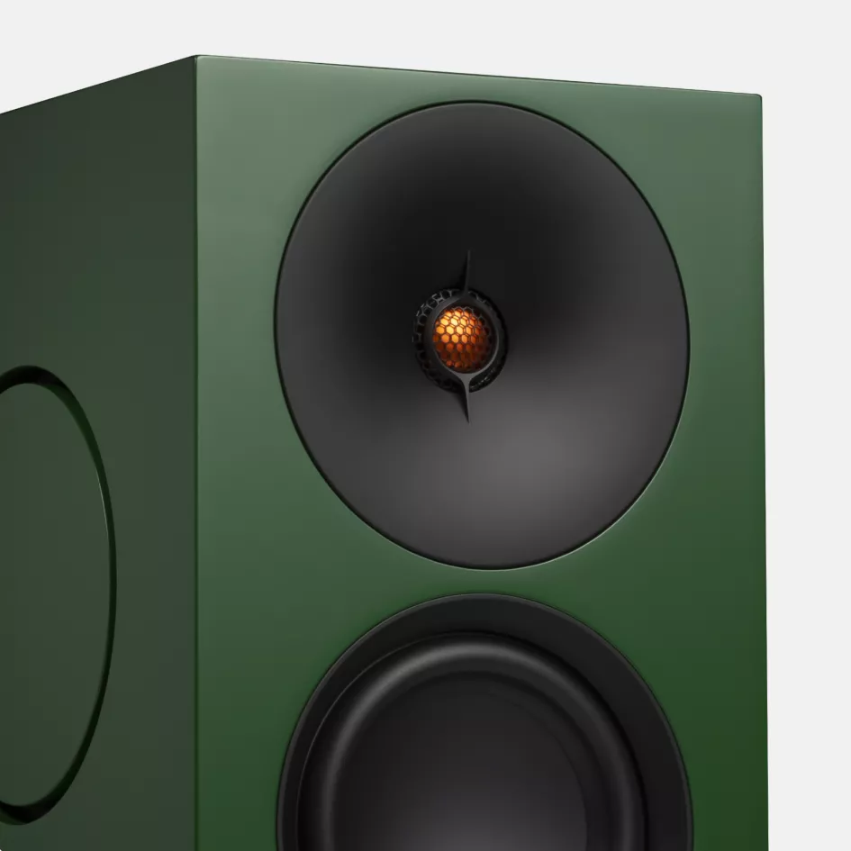
大きなサウンドを美しく、手軽に
鮮やかで細部まで豊かなサウンドをあらゆるリビングスペースに届けるL/R Mは、高域のクリアさと豊かで力強い低音を両立。バランスの取れたチューニングが広大で没入感のあるサウンドステージを生み出し、集中したアルバムセッションにも一日を通して流れるプレイリストにも最適です。
あなたの暮らしに寄り添うリスニング
お気に入りを簡単にストリーミングし、ターンテーブル、TV、ノートPC、ゲーム機を接続。どんな用途でもL/R Mがシンプルに — 日常生活に煩わしさなくHi-Fiサウンドをもたらし、あなたのリスニングスタイルにシームレスに適応します。
どんな場所にも馴染むデザイン
クリーンなライン、大胆なカラー、考え抜かれたディテールが、L/R Mをどんな部屋にも自然に溶け込ませます。フローティングベースとさりげないLEDアンダーライティングがあなたの空間に静かな存在感を与え、音楽を主役にします。
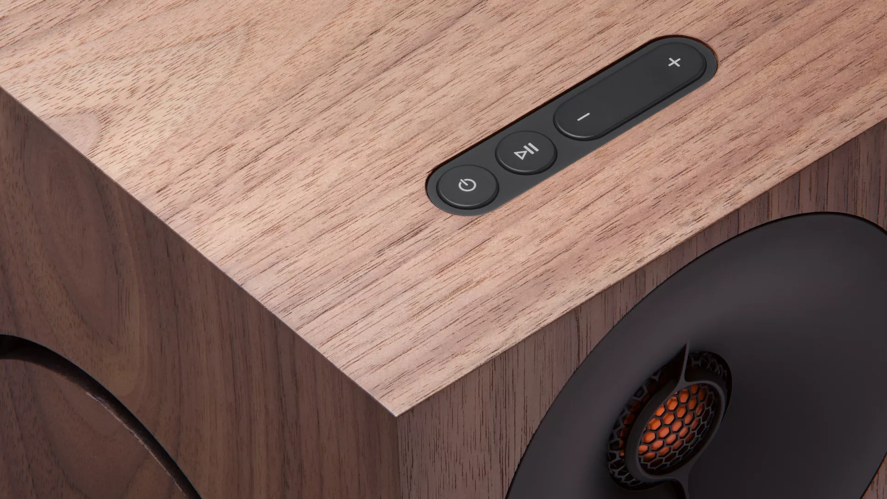
YOUR MUSIC, DELIVERED WITH STREAMMAGIC
あなたの音楽を、STREAMMAGICで届ける
StreamMagic Gen 4は、Spotify、Qobuz、TIDAL、Amazon Musicを通じたハイレゾストリーミングを提供。Roon、Google Cast、AirPlay 2、UPnPに加え、グローバルインターネットラジオにも対応。ロンドンのエンジニアが開発した、将来にわたって直感的にすべての音楽にアクセスできるプラットフォームです。
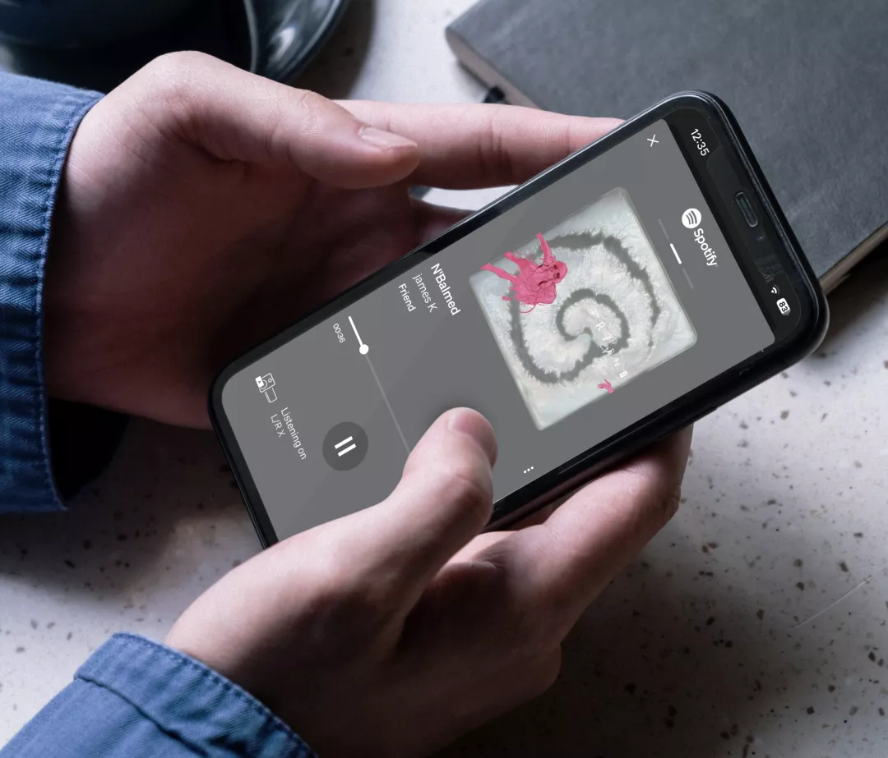
卓越のエンジニアリング

ディテールと奥行きのためのカスタムツイーター
独自の28mmツイーターは、デュアルラジアスアルミニウムドーム、カスタムウェーブガイド、フェーズリング、先進のリアチャンバー設計を採用し、比類のないディテールと奥行きを実現。スピーカーが消え去るかのようなリアルで超ワイドなサウンドステージを生み出し、まるでホログラフィックなリスニング体験をお届けします。

サブウーファー不要のパワフルな低音
デュアル4.75インチ フォースキャンセリング パッシブラジエーターが、通常はるかに大きなスピーカーでしか得られない低域の重量感を実現。サブウーファーなしで、深く明瞭な低音と迫力を、音楽を圧倒することなく包み込むように届けます。

あらゆる楽曲の繊細なディテールを引き出す
精密な64ビットDSPパイプラインが、従来の処理では失われる繊細なテクスチャーまで捉え、最小の音楽的ディテールを保持。すべてのフィルターステージがほぼ完璧な演算精度で動作し、あらゆるトラックに込められた生の自然なニュアンスと感情を明らかにします。

あらゆる部屋で最適なパフォーマンスを
DynamEQとルーム最適化ツールにより、L/R Mはあらゆるリスニングレベルで自然なバランスを維持。オープンプランのスペースでもコンパクトな環境でも、スムーズに適応し、常に自信に満ちた豊かで魅力的なサウンドをお届けします。
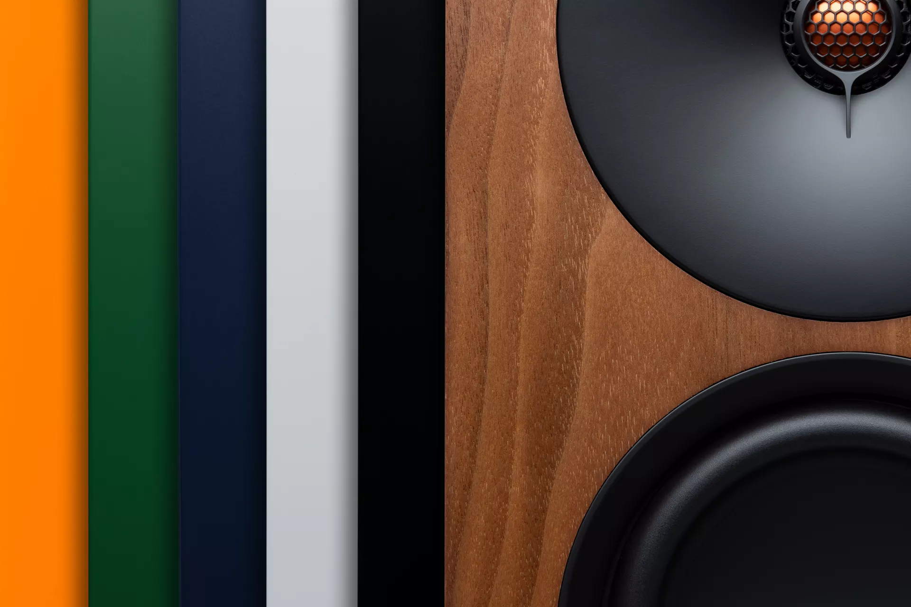
あなたの空間を彩る洗練のデザイン
L/R Mのすべての面、曲線、コンポーネントは意図をもって設計され、パフォーマンスと存在感の両方を高めます。あなたのスタイルに合うフィニッシュを選び、洗練されたシンプルさと自信あるサウンドをご自宅の中心にお届けするスピーカーをお楽しみください。
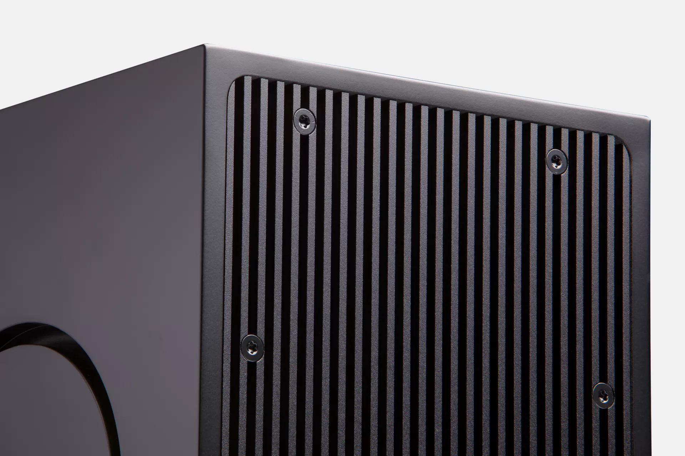
丁寧に作り、経験で磨く
ロンドンの社内専門家によってデザインされたL/R Mは、ケンブリッジの品質への長年のこだわりを反映しています。プレミアム素材、考え抜かれたデザイン、音楽を基軸としたエンジニアリングを結集し、何年にもわたるリスニングとともに成長する体験をお届けします。
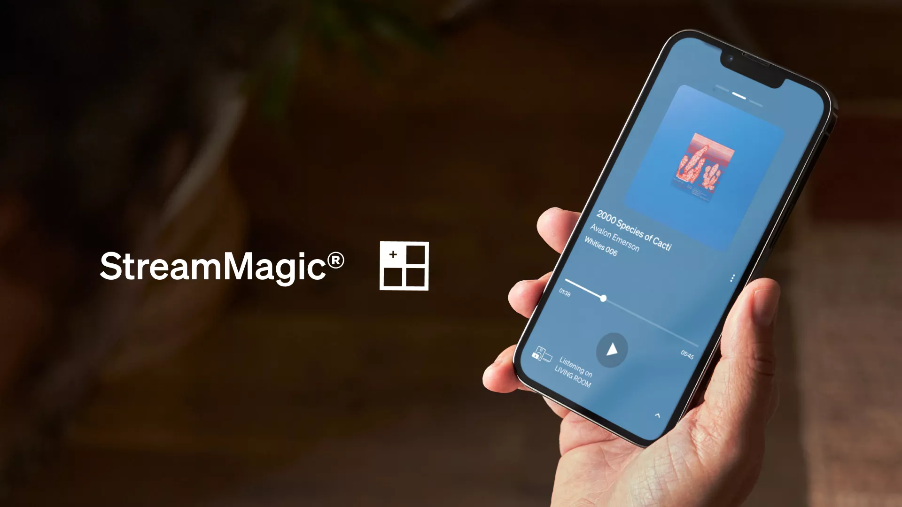
マルチルーム、あなたのスタイルで
複数のCambridge Audioストリーミングデバイスを同期して、部屋から部屋へシームレスに音楽を流しましょう。
内蔵のGoogle Cast、Apple AirPlay 2、ROON互換性が、完璧なマルチルームシステムを構築する柔軟性を提供します。
すべての部屋を一つのパーティシステムにまとめても、部屋から部屋へ音楽を追いかけても、マルチルームオーディオがリスニングを止めません。